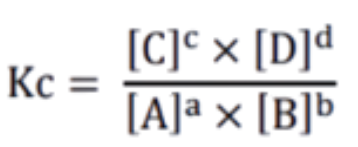
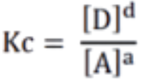
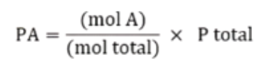
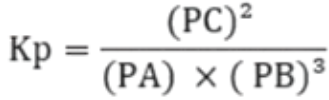
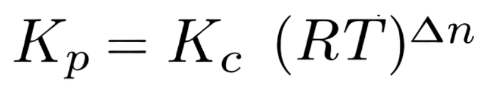
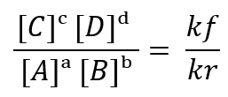
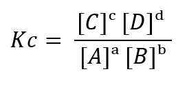
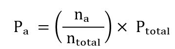
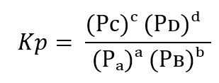

MENALAR
Setelah mengamati fenomena kesetimbangan dinamis dan memahami bahwa reaksi dapat berlangsung dua arah, pemahaman tersebut dapat diperdalam melalui analisis kuantitatif.
Kc merupakan perbandingan (hasil bagi) antara konsentrasi molar zat-zat ruas kanan dengan konsentrasi molar zat ruas kiri yang dipangkatkan dengan koefisiennya. Karena fasa padat (s) dan cair (l) tidak memiliki konsentrasi, maka kedua fasa ini tidak dilibatkan dalam rumus tetapan kesetimbangan Kc dan diberi nilai = 1.
1. Kesetimbangan homogen
Terjadi pada saat produk dan juga reaktan-nya berasal dari fase yang sama, yaitu seluruhnya gas (g) atau seluruhnya cairan (aq).
aA(g) + bB(g) ⇄ cC(g) + dD(g)
Maka, nilai kesetimbangan disusun sebagai berikut:

2. Kesetimbangan heterogen
Terjadi pada saat produk dan reaktan memiliki fase yang berbeda. Di mana yang hanya mempengaruhi tetapan kesetimbangan hanya unsur yang berwujud gas (g) dan cairan (aq).
aA(g) + bB (s) ⇄ cC (s) + dD (g)
Maka, nilai kesetimbangan disusun sebagai berikut:

Kp adalah hasil kali tekanan parsial gas-gas hasil reaksi dibagi dengan hasil kali tekanan parsial gas-gas pereaksi yang telah dipangkatkan dengan koefisien masing-masing.
Langkah-langkah menentukan harga Kp:
1. Tulis persamaan reaksi
2. Menentukan jumlah mol dalam keadaan setimbang
3. Menentukan tekanan parsial masing-masing gas, misalnya untuk gas A

4. Masukkan data tekanan parsial ke rumus Kp
Contoh:
Reaksi:
A(g) + 3B(g) ⇄ 2C(g)
Rumus Kp:

Selain menghitung Kc dan Kp secara terpisah, kita juga dapat mencari hubungan antara keduanya.
Hubungan tersebut dinyatakan dengan rumus:

dengan:
R = tetapan gas (0,082 L·atm/mol·K)
T = suhu (Kelvin)
Δn = jumlah mol gas produk − jumlah mol gas pereaksi
Untuk reaksi pembentukan amonia:
Δn = 2 − 4 = −2
Artinya, perubahan jumlah mol gas memengaruhi hubungan antara Kc dan Kp.
Melalui analisis ini, dapat disimpulkan bahwa:
Nilai Kc dan Kp saling berhubungan.
Hubungan tersebut bergantung pada suhu dan perubahan jumlah mol gas.
Kesetimbangan kimia dapat dianalisis secara sistematis melalui data kuantitatif.
Setelah melakukan pengamatan dan menyusun pertanyaan ilmiah, tahap berikutnya adalah menalar. Pada tahap ini, anda menggunakan data observasi dan pertanyaan yang telah dibuat untuk menarik kesimpulan logis serta membangun pemahaman konseptual tentang kesetimbangan kimia.
Dalam sains, penalaran merupakan proses penting yang menghubungkan fakta empiris dengan konsep ilmiah. Konsep kesetimbangan kimia, termasuk rumus tetapan kesetimbangan, lahir dari analisis pola data eksperimen serta inferensi ilmiah terhadap fenomena yang diamati.
🔬 Penalaran dari Fenomena Kesetimbangan
Berdasarkan fenomena air dalam wadah tertutup dan berbagai eksperimen reaksi reversibel, ilmuwan menalar bahwa:
• reaksi dapat berlangsung dua arah
• kondisi stabil tidak berarti reaksi berhenti
• kesetimbangan terjadi ketika laju reaksi maju sama dengan laju reaksi balik
• komposisi zat mencapai nilai tertentu yang tetap pada suhu tertentu
Penalaran ini menjadi dasar lahirnya konsep kesetimbangan dinamis.
⚗️ Jejak Matematis Awal Rumus Kc
Misalkan reaksi umum:
aA + bB ⇌ cC + dD
Pengamatan eksperimen menunjukkan bahwa pada keadaan setimbang:
• konsentrasi zat tidak berubah terhadap waktu
• perbandingan konsentrasi zat mencapai nilai tertentu
• nilai tersebut tetap selama suhu konstan
Berdasarkan konsep kinetika, laju reaksi dinyatakan sebagai:
rₘₐⱼᵤ = kf [A]ᵃ [B]ᵇ
rᵦₐₗᵢₖ = kr [C]ᶜ [D]ᵈ
Pada keadaan setimbang:
rₘₐⱼᵤ = rᵦₐₗᵢₖ
Sehingga:
kf [A]ᵃ [B]ᵇ = kr [C]ᶜ [D]ᵈ
Dengan menyusun ulang diperoleh:

Karena rasio konstanta laju bernilai tetap pada suhu tertentu, maka didefinisikan:

👉 Pada tahap menalar, rumus Kc dipahami sebagai konsekuensi kesamaan laju reaksi pada kesetimbangan.
🌫️ Jejak Matematis Awal Rumus Kp
Pada sistem gas, pengamatan menunjukkan bahwa tekanan parsial dapat menggantikan konsentrasi karena tekanan berbanding dengan jumlah partikel gas.
Jika tekanan parsial gas A dinyatakan sebagai:

maka hubungan kesetimbangan dapat dituliskan sebagai:

Rumus ini muncul sebagai representasi matematis fenomena stabilnya tekanan parsial gas pada keadaan setimbang.
🔗 Jejak Matematis Awal Hubungan Kc dan Kp
Pengamatan menunjukkan bahwa tekanan dan konsentrasi gas berkaitan melalui hukum gas ideal:
PV = nRT
Jika konsentrasi gas dinyatakan sebagai:
M = n / V
maka diperoleh hubungan:
P = MRT
Dengan mensubstitusi hubungan tersebut ke dalam persamaan kesetimbangan, diperoleh:
Kp = Kc (RT)Δⁿ
dengan:
Δn = mol gas produk − mol gas pereaksi
Hubungan ini menunjukkan bahwa tekanan dan konsentrasi merepresentasikan fenomena kesetimbangan yang sama.